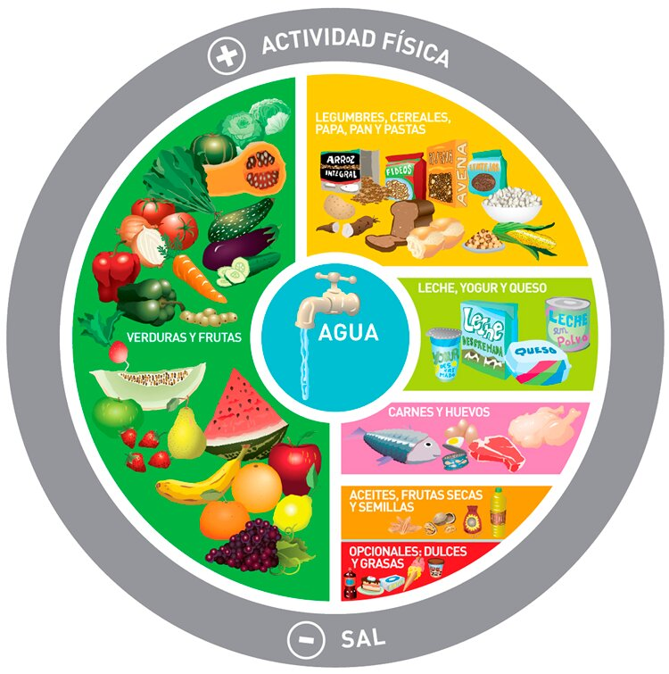
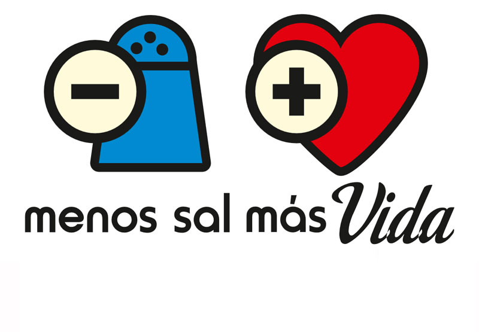
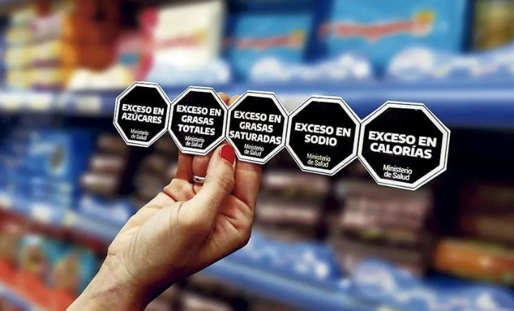
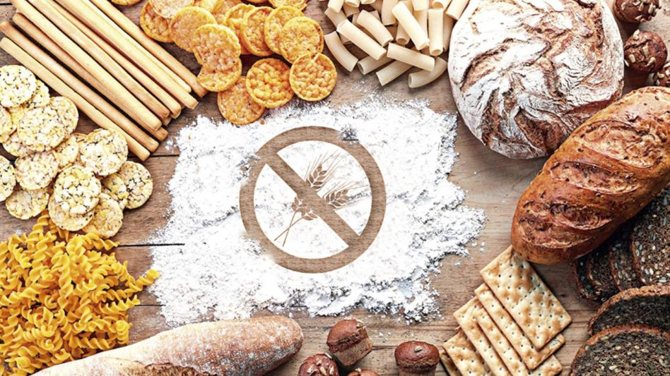

Educacion nutricional
Guías de Alimentación Saludable para la Población Argentina
Las Guías Alimentarias para la Población Argentina (GAPA) son un conjunto de recomendaciones que tienen como objetivo fomentar una alimentación saludable en nuestro país. Constituyen una herramienta fundamental para favorecer la difusión de conocimientos y generar comportamientos alimentarios más saludables
Mas InfoBuenas Prácticas de Manipulación de Alimentos
Las Buenas Prácticas de Manufactura son unos principios básicos de higiene que se deben seguir para garantizar que los alimentos y bebidas cumplan con los requisitos sanitarios para cuidar la salud de los consumidores y asegurar un producto de calidad. Estás prácticas se deben llevar a cabo en todas las etapas de la cadena de alimentos: manipulación, preparación, elaboración, envasado, almacenamiento, transporte y distribución. Los principios genera que se establecen en las Buenas Prácticas de Manufactura son una base para que las empresas de la industria de alimentos eviten la contaminación o cualquier riesgo que pueda poner en peligro la salud de los consumidores. De hecho, las Buenas Prácticas de Manufactura nacen como una respuesta a los graves problemas de salud que se originaron por la falta de higiene en los procesos de elaboración de alimentos.
Mas InfoCampaña de concientización menos Sal, más vida.
La campaña busca promover la implementación de acciones basadas en evidencias para reducir el consumo de sal en la población. Se pretende compartir técnicas que faciliten la ejecución de políticas integrales de reducción de sal y diseminar mensajes clave para promover prácticas saludables en los más pequeños, en la comunidad educativa y en las familias.
Mas InfoEtiquetado Frontal de Alimentos
Buscan advertir en los alimentos y bebidas sin alcohol el contenido excesivo de nutrientes críticos como azúcares, grasas totales, grasas saturadas y sodio, y de calorías, así como la presencia tanto de edulcorantes como de cafeína. Lo hacen a través de un gráfico con la palabra EXCESO EN, o un rectángulo que advierte sobre el contenido de cafeína o edulcorantes y la recomendación para evitar su consumo sobre todo en infancias. En Argentina se utiliza el sello de advertencia en forma de octógono negro ya que presenta mejor visibilidad, atención y brinda información clara, rápida y fácil.
Mas InfoPrograma Nacional de Celiaquía
La enfermedad celíaca es una enfermedad crónica, que se desencadena por la ingestión de proteínas presentes en trigo, avena, cebada y centeno, habitualmente llamadas gluten, afectando el intestino delgado de personas que están genéticamente predispuestas. La enfermedad puede aparecer en cualquier momento de la vida, desde que se incorpora el gluten a la alimentación, es más frecuente en mujeres que en hombres. Cuando una persona celíaca consume gluten, se produce un daño principalmente en la mucosa del intestino disminuyendo la capacidad de absorber nutrientes.
Mas Info